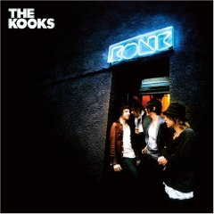

|
I'm tired, it's late, and I need to finish. Thank you for your interest in this silly little
timewaster of mine. I often complained to people this year that I wasn't happy about the music
in 2008, but looking back on this list of artists and songs, I'm really glad to be living in a time
of such creativity and originality. I hope you can find new music that inspires you or simply makes
you happy.
The Kooks are from Brighton England and take their name from a song on the Bowie classic album
Hunky Dory. Konk is their second album and it is a jem of great pop from start to finish. Amy
and I had the great pleasure of seeing them at the Fine Line this year. We really are lucky to
have such great music at intimate venues in Minneapolis.
You have my sincerest best wishes for a happy and healthy holidays and new year.
Mike
|
 |